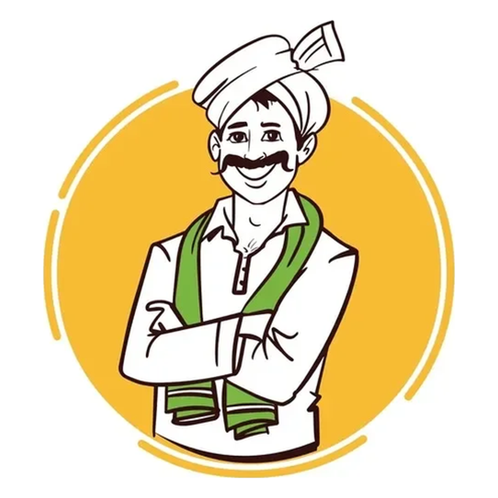

MandiERP
The digital arhat desk engineered for agricultural market yard (APMC) trading firms: a single executable and one local database file. Zero internet connection required, zero cloud lag, sub-millisecond local SQLite transactions, paisa-exact deduction logic across 15 agricultural charge kinds, keyboard-first Tally shortcuts, and automated Tally XML synchronization.
Engineered for High-Pressure APMC Counter Workloads
Estimate Bills & Debit Notes (DN)
Built for the exact arhat flow: party, broker, truck number, bags, bill weight, kanta scale notes, and 15 configurable deduction kinds (Dalali, Kanta weight loss, cash discounts, labour, bardana claims, and TDS).
Keyboard-First Tally Keybindings
Counter operators never touch the mouse. Uses standard Tally shortcut conventions: F8 (New Estimate), F2 (Date), F3 (Account Switch), F6 (Payments), F12 (Setup), and Ctrl+A (Accept & Save).
Native Tally Prime XML Sync
Built-in XML protocol engine connects directly to Tally on port 9000. Syncs batches of 25 journal vouchers automatically every 60 seconds with line-by-line refusal feedback.
Multi-Firm Account Hot-Switching
Run multiple mandi trading firms from a single desk. Each entity has its own isolated SQLite database under `db/`, distinct GSTIN/PAN letterheads, and independent estimate serial numbers.
Running Payment Book & Ageing
Track receivables and outstandings aged 0–30, 31–60, and 60+ days. Automatically credits payments on account against the oldest open bills, matching traditional arhat ledger settlement practices.
Direct Thermal & A4 Sheet Printing
Zero-dependency document rendering: print instant 80mm thermal slips for gate passes or complete A4 estimate sheets for formal audits without external PDF drivers.